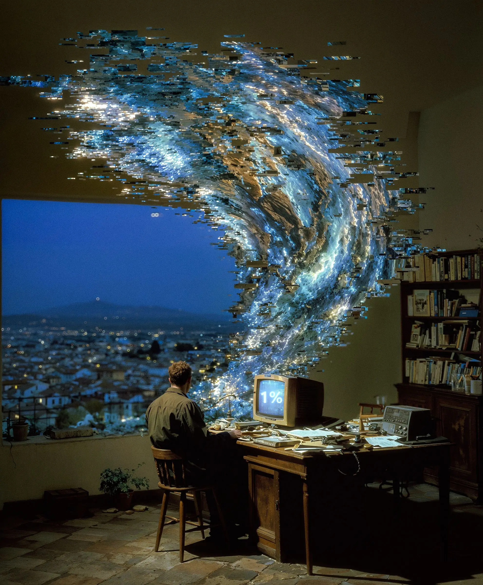

Each block: HOZIR is the comp as it is today (rebuilt from its markup and CSS), then two fixes, A and B, in the same visual language. The white Tavsiya badge marks the one I recommend. Numbers in A/B follow the progress model in ux-spec.md (lesson 1 = 6 units), so they differ from the comp's 5/7 and 71% on purpose.
Ordered by impact on students. Static snapshots: nothing here is clickable.
1 · Asosiy sahifa · Yuqori taʼsir
Bosh tugma bugungi darsga olib borsin
Saturday, lesson 3 is live. The student opens the portal in class, and the big pill says "Davom etish: 1-dars, 06-mashq", an optional exercise from two weeks ago. Today's lesson is the 4th card, about 1.5 screens down at 390px. Above it sit three tag pills, plus a "← Chiqish" link in the slot where every other screen has its back arrow.
Hozir
Eski qoʻshimcha mashq birinchi turadi; bugungi dars pastda yashiringan.
A Tavsiya
Salom,Dilshod
Hozir davom etmoqda · 3-dars
Darsni ochish: Skill va agentlar Keyingi qadam1-dars · Amaliyot 01 · P3A: Bosh tugma bugungi jonli darsni ochadi, qolib ketgan ish esa ikkinchi qatorda turadi. Guruh, mentor va «Chiqish» menyuga koʻchdi, shuning uchun darslar bir ekran yuqoriga chiqadi.
B
B: Jonli dars katta koʻk kartada, darsda telefonni ochgan talaba uni darrov topadi. Lekin bu karta pastdagi roʻyxatda yana takrorlanadi.
2 · Mashq sahifasi · Yuqori taʼsir
Nusxalash tugmasida soʻz boʻlsin
The core job of the whole portal is a round icon with no word on it. A non-technical student does not read two overlapping squares as "copy". When they do tap it, the prompt is silently marked done and there is no undo. The "where to paste" line, the most common source of mistakes, is the faintest text in the row. The spec asks for a text label, a toast with "Bekor qilish", and a tick that works as a toggle.
Hozir
Promptlar · 2 ta
- 01
Manbalarni tekshirish
NotebookLM → Chat
Yuklangan manbalar asosida «Ravon Uy» kompaniyasining oxirgi choragidagi 5 ta asosiy raqamini jadval qilib chiqar.
- 02
Audio-brifing sozlamasi
NotebookLM → Studio → Audio Overview → Customize
Rahbar uchun 10 daqiqalik brifing tayyorla. Avval eng muhim 3 ta muammo, keyin [boʻlim nomi] boʻyicha raqamlar.
Faqat belgi bor, soʻz yoʻq; xato bosilsa, qaytarib boʻlmaydi.
A Tavsiya
Promptlar · 1 / 2 bajarildi
- 01
Manbalarni tekshirish
Qayerga: NotebookLM → Chat
Yuklangan manbalar asosida «Ravon Uy» kompaniyasining oxirgi choragidagi 5 ta asosiy raqamini jadval qilib chiqar.
Nusxalash - 02
Audio-brifing sozlamasi
Qayerga: NotebookLM → Studio → Audio Overview → Customize
Rahbar uchun 10 daqiqalik brifing tayyorla. Avval eng muhim 3 ta muammo, keyin [boʻlim nomi] boʻyicha raqamlar.
Nusxalash
A: Tugmada «Nusxalash» soʻzi bor, navbatdagi prompt tugmasi qora. «Qayerga» qatori qalin, shuning uchun prompt notoʻgʻri joyga kamroq qoʻyiladi. Xato bosilsa, «Bekor qilish» bor.
B
Promptlar · 2 ta
- 01
Manbalarni tekshirish
Bajarildi
Qayerga: NotebookLM → Chat
Yuklangan manbalar asosida «Ravon Uy» kompaniyasining oxirgi choragidagi 5 ta asosiy raqamini jadval qilib chiqar.
Nusxalash - 02
Audio-brifing sozlamasi
Qayerga: NotebookLM → Studio → Audio Overview → Customize
Rahbar uchun 10 daqiqalik brifing tayyorla. Avval eng muhim 3 ta muammo, keyin [boʻlim nomi] boʻyicha raqamlar.
Nusxalash
B: Doira qoladi, ostiga «Nusxalash» yozuvi qoʻshildi. Bajarilgan prompt «Bajarildi» soʻzi bilan belgilanadi. Bekor qilish uchun shu belgini bosasiz (kamroq koʻrinadi).
3 · Kirish · Yuqori taʼsir · faqat qulaylik, koʻrinish oʻzgarmaydi
Xato xabari oʻqilsin, ID nusxasi ishlasin
Students will paste their ID from a message as "AIP-7KQ2XM". The field has maxlength=6 and an "AIP-" prefix, so the paste becomes "AIP-7K" and the student is told "Bunday ID yoʻq", which is false. The error itself is 11px red mono over the brightest part of the photo. The fix in code: strip "AIP-", spaces and dashes before checking, and drop the maxlength. The visual fix is below; the art, the headline and the button stay.
Hozir

Bunday ID yoʻq. IDʼda 0, 1, I, L va O belgilari ishlatilmaydi.
Toʻliq ID qoʻyilganda kesiladi, xabar esa yolgʻon («Bunday ID yoʻq») va oʻqib boʻlmaydi.
A Tavsiya
IDʼda 0, 1, I, L va O boʻlmaydi. Xabardagi IDʼni qayta tekshiring.
A: Xabar 14px oddiy shriftda, qora tasma ustida, har qanday fonda oʻqiladi. «AIP-7KQ2XM» toʻliq qoʻyilsa ham ishlaydi.
B
IDʼda 0, 1, I, L va O boʻlmaydi. Xabardagi IDʼni qayta tekshiring.
B: Matn oq, 14px, «Shaxsiy ID» yozuvidagi kabi qora soya bilan. Yangi quti qoʻshilmaydi, lekin fotoning yorugʻ joyida soya yetmay qolishi mumkin. «AIP-» bilan nusxa qoʻyish ham ishlaydi.
4 · Dars sahifasi · Yuqori taʼsir
Tablar holatni koʻrsatsin, keraksiz tab boʻlmasin
In lessons 1 to 3, a quarter of the folder is "Kitob", which only says "opens in lesson 4", so it is a dead end. To find out what is left, the student has to tap all four tabs. The Amaliyot pane shows three unexplained numbers (4/5, 7 ta mashq, 13 ta prompt), and none of them says what was counted.
Hozir
Amaliyot
Korxona bilimi
4/5
4/5, 7 va 13: uchta raqam, lekin birortasining nimani sanashi yozilmagan. Kitob tabi esa boʻsh.
A Tavsiya
Amaliyot · darsda qilinadi
Korxona bilimini ishga soling
2/4
asosiy mashq bajarildi
01 · P3 Vaziyatli test
A: Kitob tabi faqat 4-darsda chiqadi. Har tab ostida holat yozilgan, shuning uchun nima qolgani bosmasdan koʻrinadi. Raqamning maʼnosi yozilgan, tugma esa aniq promptga olib boradi.
B
Amaliyot · darsda qilinadi
2 / 4 asosiy mashq
B: Mashqlar roʻyxati tabning ichida, kerakli mashq bir bosishda ochiladi. Lekin tablarning oʻzida holat yoʻq, Vazifa va Amaliyotni baribir ochib koʻrish kerak.
5 · Asosiy sahifa · Yuqori taʼsir
«Natijangiz» bitta, tushunarli raqam boʻlsin
The biggest number on the home page is "12/47", labelled "Sizning natijangiz". It is actually only lesson 2's prompt library. A student reads it as 25% of the course. Under it, "1 / 5 dars yakunlandi" disagrees with the "4 dars" tag at the top. The lesson page then says 71%, and the lesson card says 5/7. That is four formats for one idea.
Hozir
Amaliyot promptlari 12/471 / 5 dars yakunlandi
12/47 butun kursning natijasiga oʻxshaydi, aslida esa faqat 2-darsdagi promptlar.
A Tavsiya
Toʻliq bajarilgan darslar 1/4Tayyorgarlik
A: Bitta raqam va bitta maʼno: 4 ta darsdan 1 tasi toʻliq tugagan. Tayyorgarlik alohida belgilanadi, 47 ta prompt esa 2-dars ichida qoladi.
B
5 ta ish qoldi 1-dars · Vazifa · P6–P8 1-dars · Amaliyot 01 va 04 3-dars · Slaydlar 14 / 40
B: Raqam oʻrnida roʻyxat bor: nima qolgani va qayerdaligi koʻrinadi, har biri bir bosishda ochiladi. Lekin bu «Keyingi qadam» qatorini takrorlaydi.
6 · Asosiy sahifa · Oʻrta taʼsir · katta kartalar qoladi
Kartadagi yozuv: kamroq yorliq, aniq holat
Every card opens with two lines of 13px capitals, "DARS 01 · 12 SENTABR / OCHIQ · 5/7 BAJARILDI". The state, which is what a student scans for, sits on the second line and reads as the same grey noise as the date. The locked card cannot be tapped and only repeats the date; it does not say what will appear there.
Hozir
Ochiq · 5/7 bajarildi KirishAI, modellar, Context, RAG, NotebookLM
Dars kuni ochiladi Agent va
alternativalarHermes Agent, /oops, alternativalar
Sana va holat bir xil kichik bosh harflarda; «5/7» nimani sanashi yozilmagan.
A Tavsiya
A: Holat alohida pillda, sana esa oddiy yozuvda: «ochiq, 6 qadamdan 3 tasi» bir qarashda oʻqiladi. Yopiq dars qachon va nima ochilishini aytadi.
B
alternativalarDars kuni ochiladi
B: Kamroq matn: mavzular olib tashlandi, holat pastki burchakka tushdi. Sokinroq, lekin holat kichik boʻlib qoladi va karta nima haqida ekani koʻrinmaydi.
7 · Mashq sahifasi · Oʻrta taʼsir
Fayllar: qaysini oʻqish, qaysini yuklash
Four files in a flat list: the brief, a PDF copy of the prompts that are already on the page, and two real NotebookLM sources. Nothing tells the student which one to read and which ones to upload. Many will upload all four, the prompts PDF included. The download target is a 36px icon, and the row itself cannot be tapped.
Hozir
Fayllar
- 06_Rahbar_audio.pdf 240 KB
- 06_Promptlar.pdf 96 KB
- Ravon_Uy_Q3_hisobot.pdf 1,2 MB
- Savdo_jadvali_Q3.csv 48 KB
Toʻrt fayl bir xil koʻrinadi; promptlar PDFʼi pastdagi promptlarni takrorlaydi.
A Tavsiya
1 · Avval oʻqing
2 · NotebookLMʼga yuklang
Keyin pastdagi promptlardan nusxa oling.
A: Fayllar vazifasi boʻyicha ikkiga ajratildi, qaysini oʻqish va qaysini yuklash aniq. Butun qator bosiladi. Promptlar PDFʼi sahifa oxiridagi «PDF varianti» havolasiga koʻchdi.
B
1 · Fayllarni yuklab oling
Hammasini yuklash3 fayl · ZIP · 1,5 MBB: Telefonda 3 marta yuklash oʻrniga bitta tugma. Lekin NotebookLM ZIPʼni qabul qilmaydi, telefonda uni ochish esa koʻpchilikka qiyin.